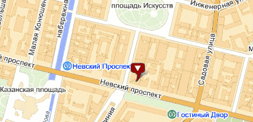
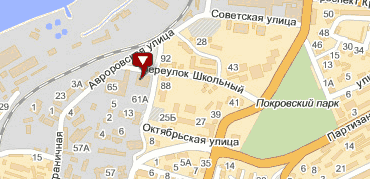

ФОНД “РУССКИЙ МИР”
Основные задачи фонда:
- поддержка общественных и некоммерческих организаций, профессиональных объединений, научных и образовательных учреждений, предметом деятельности которых являются исследования и разработки методик преподавания и программ изучения русского языка и литературы, исследование истории и современной России;
- содействие распространению объективной информации о современной России, российских соотечественниках и формированию на этой основе благоприятного по отношению к России общественного мнения;
- поддержка национальных и международных организаций и объединений преподавателей русского языка и литературы;
- сотрудничество с российскими, иностранными и международными государственными, общественными, научными, коммерческими, некоммерческими и благотворительными организациями, учреждениями образования и культуры, иными учреждениями, организациями и объединениями, частными лицами в деле популяризации русского языка и культуры;
- поддержка деятельности российских диаспор за рубежом по сохранению их культурной идентичности и русского языка как средства межнационального общения, содействие установлению климата межнационального уважения и мира;
- поддержка экспорта российских образовательных услуг;
- содействие экспертным, научным и образовательным обменам, соответствующим целям Фонда;
- поддержка зарубежных русскоязычных и российских средств массовой информации и информационных ресурсов, ориентированных на достижение целей Фонда;
- поддержка усилий общественных организаций и государственных учреждений по сохранению рукописного наследия России;
- взаимодействие с Русской православной церковью и другими конфессиями в деле продвижения русского языка и российской культуры.
Идеология
Русский мир — это не только русские, не только россияне, не только наши соотечественники в странах ближнего и дальнего зарубежья, эмигранты, выходцы из России и их потомки. Это ещё и иностранные граждане, говорящие на русском языке, изучающие или преподающие его, все те, кто искренне интересуется Россией, кого волнует её будущее.
Все пласты Русского мира — полиэтнического, многоконфессионального, социально и идеологически неоднородного, мультикультурного, географически сегментированного — объединяются через осознание причастности к России.
Формируя «Русский мир» как глобальный проект, Россия обретает новую идентичность, новые возможности эффективного сотрудничества с остальным миром и дополнительные импульсы собственного развития.
Все перечисленные признаки характерны как для россиян, проживающих в стране, так и для остального Русского мира.
Мир — это общность. Как бы ни критиковали термины «общинности», «соборности», «коллективизма», их историческое бытование основывалось на определённой социальной практике. Практика же последних десятилетий показывает, что одна из проблем сегодняшней России — разобщённость общества, индивидуализм, разрушение социальных связей. Задача построения гражданского общества невыполнима без их восстановления, укрепления, воссоздания общности, единения в пространстве и истории. Все эти процессы и составляют, по сути, понятие «Русский мир».
Русский мир — это мир России. Призвание каждого человека — помогать своему отечеству, заботиться о ближнем. Очень часто можно услышать, что страна могла бы сделать для людей. Но ничуть не менее важно, что каждый из нас может сделать для Родины. От настроений иждивенчества следует поворачиваться к идее служения России.
Мир — это отсутствие вражды. Русский мир — это ещё и русское примирение, согласие, русский лад, единство, преодолённые расколы ХХ века. Целый ряд знаковых событий уже формирует эту ситуацию — объединение Церквей, перезахоронение значимых фигур эмиграции.
Русский мир должен быть не столько воспоминанием о прошлом, сколько деятельным, мобилизующим началом построения лучшего будущего для великого народа, живущего в мире с собой и остальным миром.
ФИЛИАЛЫ ФОНДА “РУССКИЙ МИР”

Санкт-Петербургский филиал
Адрес: Санкт-Петербург, Невский пр., д. 38/4, Бизнес-центр "Невский, 38"
Телефон/факс: (812) 611-0565
E-mail: nwbranch@russkiymir.ru

Дальневосточный филиал
Адрес: Российская Федерация, 690091, г. Владивосток, ул. Алеутская, дом 65б, офис 507-508
Телефон: +7 (914) 790 62 67
Контактное лицо: Кочкина Ольга Викторовна, референт
Телефон: +7 (924) 231 07 47
E-mail: febranch@russkiymir.ru

 На встрече главы думского Комитета по образованию Вячеслава Никонова с министром высшего образования Сирийской Арабской Республики и президентом Дамасского государственного университета обсуждался вопрос популяризации русского языка в Сирии.
На встрече главы думского Комитета по образованию Вячеслава Никонова с министром высшего образования Сирийской Арабской Республики и президентом Дамасского государственного университета обсуждался вопрос популяризации русского языка в Сирии.